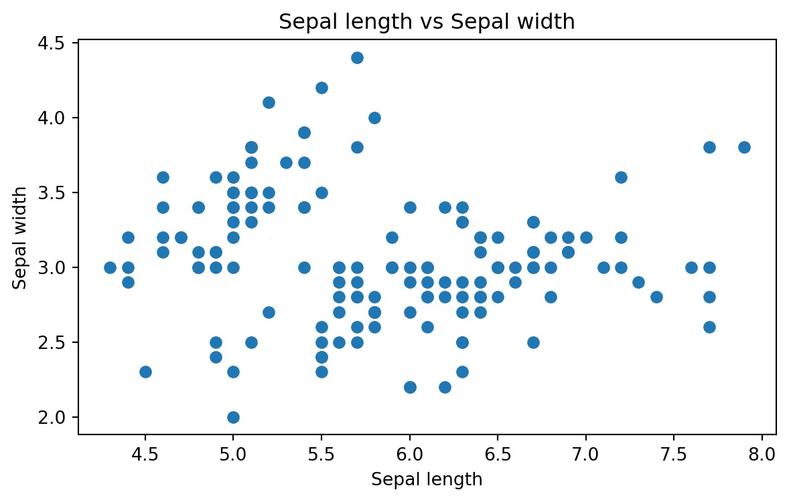

import matplotlib.pyplot as plt
import numpy as np7 Data visualisation with Matplotlib
Matplotlib is a comprehensive plotting library for Python. It can be used to create a wide variety of plots, including line plots, bar plots, histograms, scatter plots, and much more. Matplotlib is highly customizable and allows you to create publication-quality plots. Matplotlib can be installed using pip or conda:
# installation using pip
pip install matplotlib7.1 Getting started
Let’s start by creating a simple line plot using Matplotlib. The following code generates data along a sine wave and plots it using Matplotlib. We start by importing the necessary libraries.
Next, we generate the data and plot it using Matplotlib (Figure 7.1).
x = np.linspace(0, 10, 100)
y = np.sin(x)
plt.plot(x, y)
plt.show()The plt.plot() function is used to create the plot, and the plt.show() function is used to display the plot. The x and y arrays contain the data for the x-axis and y-axis, respectively. Essentially, we were able to create a decent looking plot with just four lines of code.
Let’s customize the plot a bit by adding labels to the x-axis and y-axis, a title, and a grid.
plt.plot(x, y)
plt.xlabel('x axis')
plt.ylabel('y axis')
plt.title('Sine wave plot')
plt.grid(True)
plt.show()7.1.1 The second way of creating a plot
What makes Matplotlib a bit tricky for beginners is that it has two interfaces: and explicit and implicit one. The one we saw above is the implicit interface, which resembles MATLAB, and makes it easier to create simple plots. The explicit interface is more powerful and flexible, but it requires more lines of code. Let’s see how we can create the same plot using the Object Oriented (OO) explicit interface.
fig, ax = plt.subplots()
ax.plot(x, y)
plt.show()
In the second approach, we first create a figure and an axis object using plt.subplots(). We then use the plot() method of the axis object to create the plot. In a simple case like this one, the difference between the two interfaces isn’t too big.
Let’s add the missing labels, title, and grid to the plot.
fig, ax = plt.subplots()
ax.plot(x, y)
ax.set_xlabel('x axis')
ax.set_ylabel('y axis')
ax.set_title('Sine wave plot')
ax.grid(True)
plt.show()
Now we have a plot that is identical to the one we created earlier. It’s fine to use either of the two approaches, but the latter (object oriented) is recommended by the Matplotlib developers (especially for more elaborate plots).
7.2 Plotting Pandas data
Matplotlib can be used to plot data stored in Pandas data structures. Let’s create a simple line plot using a Pandas DataFrame. We start by importing the necessary libraries and the iris dataset (Table 7.1).
import pandas as pd
import seaborn as sns
# Load the dataset
df = sns.load_dataset('iris')
df.head()| sepal_length | sepal_width | petal_length | petal_width | species | |
|---|---|---|---|---|---|
| 0 | 5.1 | 3.5 | 1.4 | 0.2 | setosa |
| 1 | 4.9 | 3.0 | 1.4 | 0.2 | setosa |
| 2 | 4.7 | 3.2 | 1.3 | 0.2 | setosa |
| 3 | 4.6 | 3.1 | 1.5 | 0.2 | setosa |
| 4 | 5.0 | 3.6 | 1.4 | 0.2 | setosa |
Let’s start by creating a simple scatter plot using the iris dataset. We will plot the sepal length against the sepal width.
fig, ax = plt.subplots()
ax.scatter(df['sepal_length'], df['sepal_width'])
ax.set_xlabel('Sepal length')
ax.set_ylabel('Sepal width')
ax.set_title('Sepal length vs Sepal width')
plt.show()

The scatter() method is used to create a scatter plot. We pass the sepal length and sepal width columns from the iris dataset to the scatter() method. We then add labels to the x-axis and y-axis, a title, and display the plot.
Now, we can make the plot more informative by coloring the points based on the species of the iris flower.
fig, ax = plt.subplots()
species = df['species'].unique()
for sp in species:
x = df[df['species'] == sp]['sepal_length']
y = df[df['species'] == sp]['sepal_width']
ax.scatter(x, y, label=sp)
ax.set_xlabel('Sepal length')
ax.set_ylabel('Sepal width')
ax.set_title('Sepal length vs Sepal width')
ax.legend()
plt.show()Above, we loop through the unique species in the dataset and create a scatter plot for each species. We then add a legend to the plot to indicate which species each color corresponds to.
We might also want to choose different shapes for the points based on the species of the iris flower. This is not much different from coloring the points based on the species (Figure 7.7).
fig, ax = plt.subplots()
species = df['species'].unique()
markers = ['o', 's', '^']
for sp, marker in zip(species, markers):
x = df[df['species'] == sp]['sepal_length']
y = df[df['species'] == sp]['sepal_width']
ax.scatter(x, y, label=sp, marker=marker)
ax.set_xlabel('Sepal length')
ax.set_ylabel('Sepal width')
ax.set_title('Sepal length vs Sepal width')
ax.legend()
plt.show()The difference here is that we pass a list of markers to the scatter() method. The zip() function is used to iterate over two lists simultaneously.
7.2.1 Several subplots
Subplots can actually be used for displaying multiple plots in the same figure. Let’s create a figure with two subplots: one for the sepal length vs sepal width and another for the petal length vs petal width (Figure 7.8).
# Create a figure with two subplots
fig, ax = plt.subplots(nrows = 1, ncols = 2, figsize=(6, 3))
# Plot 1
species = df['species'].unique()
markers = ['o', 's', '^']
for sp, marker in zip(species, markers):
x = df[df['species'] == sp]['sepal_length']
y = df[df['species'] == sp]['sepal_width']
ax[0].scatter(x, y, label=sp, marker=marker)
ax[0].set_xlabel('Sepal length')
ax[0].set_ylabel('Sepal width')
ax[0].set_title('Sepal length vs Sepal width')
ax[0].legend()
# tight_layout() adjusts the padding between the subplots to make them fit nicely
plt.tight_layout()
# Plot 2
species = df['species'].unique()
for sp, marker in zip(species, markers):
x = df[df['species'] == sp]['petal_length']
y = df[df['species'] == sp]['petal_width']
ax[1].scatter(x, y, label=sp, marker=marker)
ax[1].set_xlabel('Petal length')
ax[1].set_ylabel('Petal width')
ax[1].set_title('Petal length vs Petal width')
ax[1].legend()
plt.tight_layout()
plt.show()
Now we have a figure with two subplots side by side. Here we used the plt.subplots() function to create a figure with two subplots. The first argument is the number of rows, and the second argument is the number of columns. We then create the two scatter plots and add labels, titles, and legends to each subplot. This works, but we did have to basically write the same lines of codes twice.
One way to avoid this is to create a custom function, which takes the x- and y-coordinates as arguments and returns a scatter plot. Let’s see how we can do this (Figure 7.9).
def plot_scatter(ax, x, y, species, markers):
for sp, marker in zip(species, markers):
x_sp = x[df['species'] == sp]
y_sp = y[df['species'] == sp]
ax.scatter(x_sp, y_sp, label=sp, marker=marker)
ax.set_xlabel(x.name)
ax.set_ylabel(y.name)
ax.set_title(f'{x.name} vs {y.name}')
ax.legend()
fig, ax = plt.subplots(nrows = 1, ncols = 2, figsize=(6, 3))
# Plot 1
plot_scatter(ax[0], df['sepal_length'], df['sepal_width'], df['species'].unique(), ['o', 's', '^'])
# Plot 2
plot_scatter(ax[1], df['petal_length'], df['petal_width'], df['species'].unique(), ['o', 's', '^'])
plt.tight_layout()
plt.show()Here, we were able to achieve a similar result with a more elegant and scalable solution. The custom function we created let’s us create scatter plots with any combination of x- and y-coordinates. This is a good example of how we can use functions to make our code more modular and reusable.